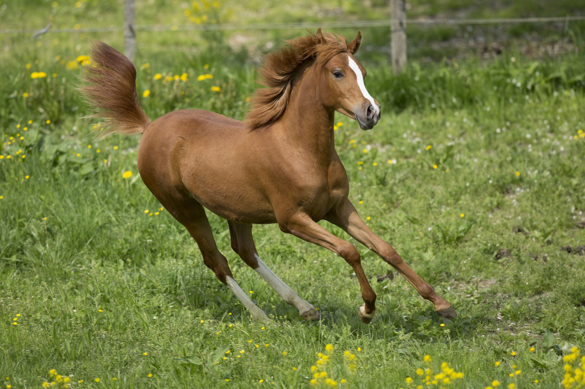

A yearling is a young horse either male or female that is between one and two years old.[1] Yearlings are comparable in development to a very early adolescent and are not fully mature physically. While they may be in the earliest stages of sexual maturity, they are considered too young to be breeding stock
